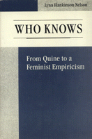

<body bgcolor="#FFFFFF" text="#000000" link="#0000FF" vlink="#CC0000" alink="#CC0000"><center><hr width="350" size="1" align="center" noshade>Establishes a framework for a much-needed dialogue between feminist science critics and other scientists and scholars about the nature of science<hr width="350" size="1" align="center" noshade><p><a href="https://cdcshoppingcart.uchicago.edu/Cart/ChicagoBook.aspx?ISBN=9780877226475&&PRESS=temple" target="_top">Buy this book!</a> | <a href="https://cdcshoppingcart.uchicago.edu/Cart/Cart.aspx?PRESS=temple" target="_top">View Cart</a> | <a href="https://cdcshoppingcart.uchicago.edu/Cart/Cart.aspx?PRESS=temple" target="_top">Check Out</a></p><p></p></center><!--none//--><h1>Who Knows</h1>
<H2>From Quine to a Feminist Empiricism</H2>
<h3>Lynn Hankinson Nelson</h3>
<P>cloth 0-87722-647-4 $60.50, Dec 89, <FONT COLOR=#990033>Out of Stock Unavailable</FONT>
<br>paper 1-56639-007-9 $32.95, Nov 92, <FONT COLOR=#990033>Out of Stock Unavailable</FONT>
<br>Electronic Book 1-43990-640-8 $34.95 <FONT COLOR=#990033>Out of Stock Unavailable</FONT>
<BR> 336 pp
6x9
</P><BLOCKQUOTE><I>"Nelson's work here has consequences for some of the pressing issues in feminist epistemology-relativism, individualism, the global variety among the perceivers in a generously democratic community of science."</I>
<br>&#151<b>Marilyn Frye</b><I></I></BLOCKQUOTE>
<p>In the past fifteen years, feminist science critics have, for the most part, rejected empiricism because of its identification with positivism. Various assumptions of both empiricists and feminists, including the "tenet" that individualism is an essential element of empiricism, have led to the belief that feminist science criticism is not a part of science. This view continues the myth that science is an autonomous and apolitical activity. Building on the work of W.V.0. Quine, Lynn Nelson clears away these obstacles and establishes a framework for a much-needed dialogue between feminist science critics and other scientists and scholars about the nature of science. She makes a case for a feminist empiricism that retains a crucial role for experience, but separates empiricism from individualism.
<p>Following Quine, Nelson argues that empiricism is a theory of evidence and is distinct from empiricist accounts of science that have been built on it. She urges feminists and empiricists to work together to develop a feminist empiricism, a view of science that can account for its obvious success in explaining and predicting experience and can encompass feminist insights into relationships among gender, politics, and science.
<p>Basing her arguments on Quine�s non-foundationalist view that theories are bridges of our own construction, the author insists, as does Quine, that the construction of these bridges is constrained by experience. She determines that individualism is inconsistent with key Quinean positions and that empiricism can survive the demise of individualism. Clearly diverging from Quine, Nelson proposes the view that the evolving network of our theories does and should incorporate political views, including those shaped by, and shaping in turn, our experiences of gender.
<BR>&nbsp;<h2>Reviews</h2>
<p><I>"This is an interesting and substantial book. Joining in the debate...on the question of empiricism and its usefulness for feminist science criticism, Nelson offers a way of dealing with the problems of empiricism.... Her accounts of the inadequacies of positivism (Hemple, Nagel) and Kuhnian theory; her careful positioning of her theory in relation to other feminist work; and her lucid exposition throughout...all make this a valuable course book."</I>
<br>&#151<B><I>Women in Philosophy Newsletter</I></b>
<p><I>"Scholarly and readable, </I>Who Knows<I> is addressed to feminists, scientists, philosophers of science. ... A useful introduction to philosophy of science for feminists and to feminist science criticism for philosophers and scientists."</I>
<br>&#151<b><I>Teaching Philosophy</I></b>
<p><I>"I welcome this book, both scholarly and readable, which takes up the matter of feminism and empiricism directly and in a new way, privileging Quine, not Kuhn, as representative of post-positivistic philosophy of science. The turning of feminist attention to Quine is timely, if not indeed overdue."</I>
<br>&#151<b>Marilyn Frye</b>, Michigan State University
<BR>&nbsp;<h2>Contents</h2><P>
<p>Acknowledgments
<br>Introduction: Reopening a Discussion
<br>1. Empiricism and Feminist Science Criticism
<br>2. Autonomy, Objectivity, and Incommensurability
<br>3. Quine: Science (Almost) without Boundaries
<br>4. Addelson: The Politics of Knowledge
<br>5. Bridges of Our Own making
<br>6. Who Knows
<br>7. Science Communities
<br>Notes
<br>Bibliography
<br>Index
</P><BR>&nbsp;<H2>About the Author(s)</H2>
<P><b>Lynn Hankinson Nelson</b> is Associate Professor of Philosophy at Glassboro State College.</P>
<BR><H2>Subject Categories</H2>
<p><A HREF="/tempress/philosophy.html" TARGET="_top">Philosophy and Ethics</a>
<BR><A HREF="/tempress/women.html" TARGET="_top">Women's Studies</a>
</p>
<p align="center"><a href="https://cdcshoppingcart.uchicago.edu/Cart/ChicagoBook.aspx?ISBN=9780877226475&&PRESS=temple" target="_top">Buy this book!</a> | <a href="https://cdcshoppingcart.uchicago.edu/Cart/Cart.aspx?PRESS=temple" target="_top">View Cart</a> | <a href="https://cdcshoppingcart.uchicago.edu/Cart/Cart.aspx?PRESS=temple" target="_top">Check Out</a></p><p><font face="Arial" size="1"><a href="copyright.html" onMouseOver="window.status='Web Copyright Policy';return true;" onMouseOut="window.status=''" title="Web Copyright Policy">&copy;</a> 2015 <a href="http://www.temple.edu" target="new" onMouseOver="window.status='Link to Temple University home page';return true;" onMouseOut="window.status=''" title="Link to Temple University home page">Temple University</a>. All Rights Reserved. http://www.temple.edu/tempress/titles/533_reg.html</font></p>